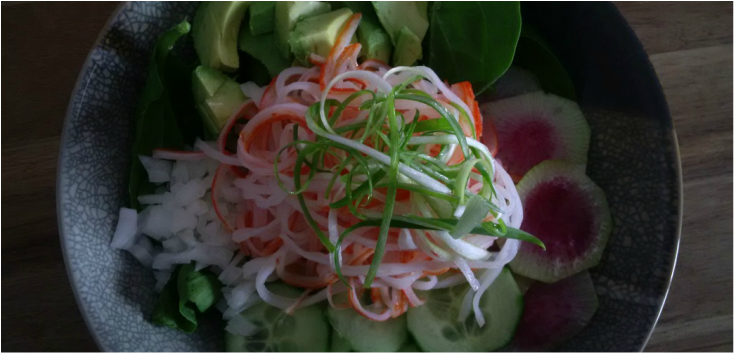
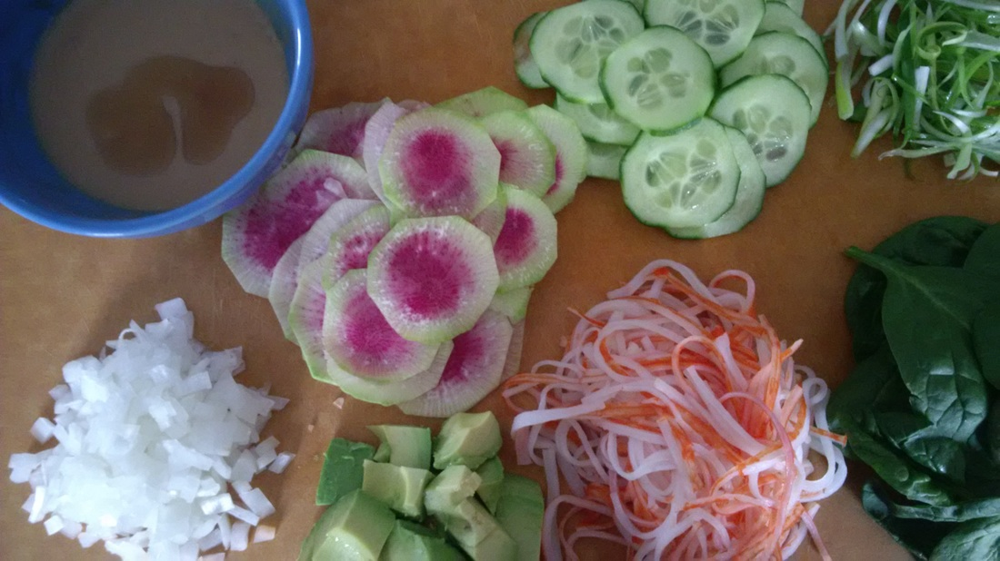
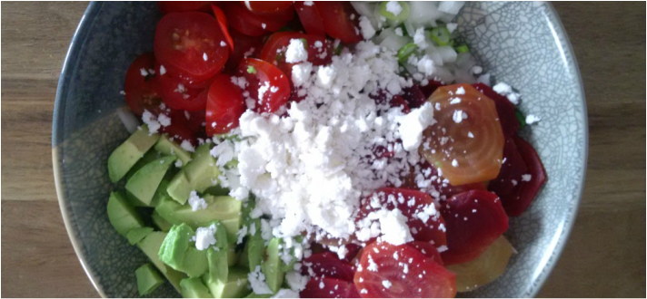

I seem to be on a roll today with salads -- second one today. (i guess i have a lot of stuff in the fridge and not enough days to finish it.) Salad also seems to be a great way to get rid of produce fast, so why not right? I wanted to switch it up today and use up the avocado so why not do a avocado crab combo!

Ingredients
- a few big handfuls of baby spinach
- 1 watermelon radishes (peeled and sliced thinly)
- 1/3 cucumber (sliced thinly)
- 1/6 white onion
- 6 imitation crab meat sticks
- 1 avocado
- 1 green onion
Dressing
- 3 tsp japanese mayonaise
- 2 tsp of light soya sauce
- 1 tsp of sugar or mirin
- 1 tsp of sesame oil
- 1 tsp of rice vinegar
joycie's Notes
- imitation crab meat is easier to eat and much prettier in salads if you shred it up (just rip it up with your fingers.)
- use the good kind of crab meat! it matters. we always have them stock up in the freezer and you can usually buy them at an asian grocery store. The cheapy ones taste floury.
- you don't need to use watermelon radishes, they just look pretty
- to make green onions curl up like that, just slice them up in thin strips and dunk them in ice water.
- if you can't find japanese mayo, you can easily substitute it with regular mayo/miracle whip/even a creamy dressing like caesar or ranch
- to make an easy peasy alternative sauce just use a store bought soy based asian dressing (we used rene's asian dressing) mixed with caesar dressing with a splash of sesame oil
Ready-Set-Go!
my usual method of salad making -- chop chop chop, mix mix mix, eat!

Had a bunch of beets laying around that i bought from our local csa and didn't know what to do with it so i threw a salad together with it. It surprisingly turned out delish! Who knew beets would be so om nom nom good?
Ingredients
- 5 small beets (boil for 45 mins)
- 1/6 white onion
- 1 stalk of green onion
- 10 baby tomatoes
- feta
Dressing
- 4 tbsp rice wine vinegar
- 1/2 tsp sugar
- 1/4 tsp salt
- pea size amount of dijon
- 1 tsp of sesame oil
- 1.5 tbsp basil olive oil
joycie's Notes
- the *only* onion you should be using in salads are white onions (Mellow, mild and sweet!)
- flavour notes: Avocado mellows out the beets. Onions give it a nice kick! Basil olive oil keeps it light and refreshing.
- type of beets used here: candy striped beets. Has a very sweet flavour.
Ready-Set-Go!
Chop, chop chop. Mix, mix, mix. Eat!